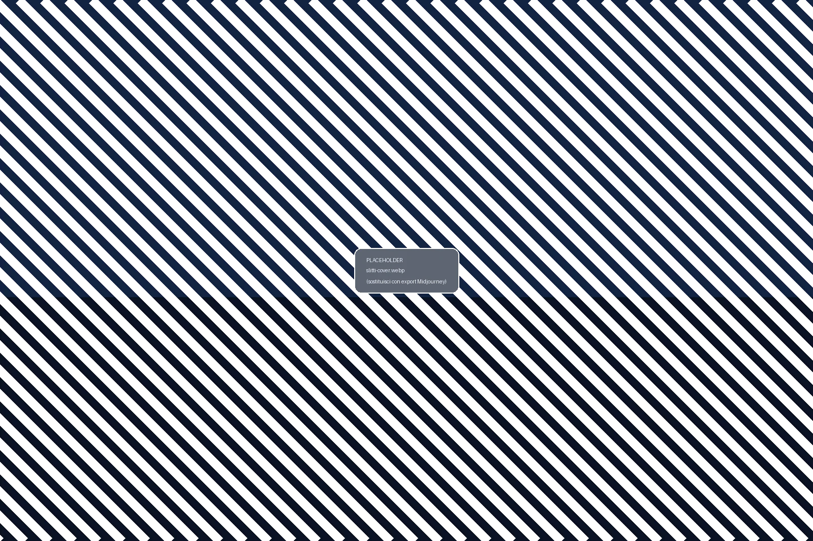
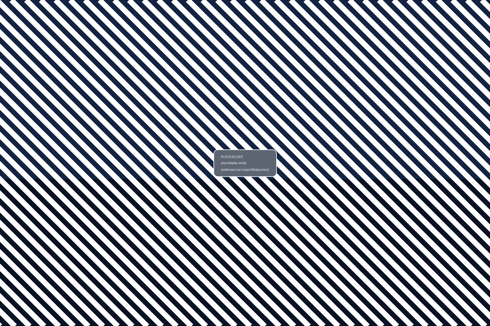

Storytelling sul brand toscano Slitti, gamma premium (tavolette, mini cakes, praline, dragée, creme) e la
procedura Yo-Yo per servire il biscotto farcito con gelato.

Slitti & Yo-Yo
Cioccolato & snack
Montecatini TermeSince 1969
Timeline essenziale
Luciano Slitti apre come torrefazione nel 1969. Nel 1990 Andrea introduce il cioccolato e, insieme al fratello
Daniele, conquista premi internazionali (Grand Prix 1994, Eurochocolate 1996, miglior chocolatier italiano 2008).
1. Valorizza la selezione rigorosa di materie prime.2. Racconta premi e heritage toscano per giustificare il posizionamento premium.3. Invita il cliente ad assaggiare abbinando caffè o gelato.
Usa la palette blu/pink per creare piccole schede storytelling accanto all'esposizione.
💰 UpsellingHeritage: "Dal 1969, Slitti è eccellenza toscana premiata a livello mondiale"Premi: "Grand Prix 1994, miglior chocolatier italiano 2008 giustificano premium"Pairing: "Ogni prodotto si abbina perfetto con espresso o gelato Badiani"
✨ Pro tip: Crea mini card storytelling con palette brand per esporre accanto ai prodotti. Racconta origine e premi per giustificare il posizionamento premium. Invita ad assaggi guidati.
TavoletteGran Cacao
Tavolette LatteNero & Gran Cacao
Tavolette Slitti in diversi profili di cacao (45%, 51%, 73%, 82%, 100%) + Caffè Latte aromatizzata con arabica tostata.
Spiega il blend: cacao + cacao butter per morbidezza, equilibrio tra zuccheri e latte (nei profili più dolci).
Conservazione: 16-18°C, lontano da luce diretta e odori forti
Display: esponi campione aperto per mostrare pattern interno e lucentezza
Stock: FIFO rigoroso; comunica shelf life lunga per freschezza percepita
Abbinamenti suggeriti: pairing con espresso o cappuccino
1. Chiedi preferenza cliente (latte/dark).2. Suggerisci pairing con espresso o cappuccino.3. Ricorda la confezione regalo e shelf life lunga.
Esporre sample aperto per mostrare pattern; mantieni stock FIFO.
💰 UpsellingOpzione 1: "Vuoi provare il set degustazione 3 tavolette? 45%, 73%, 100%"Opzione 2: "Caffè Latte aromatizzata con arabica è la nostra bestseller"Opzione 3: "Confezione regalo disponibile, perfetta per pensiero premium"
✨ Pro tip: Conserva a 16-18°C lontano da luce e odori. FIFO rigoroso. Esponi una tavoletta sample aperta per mostrare pattern interno e lucentezza.
Mini cakesHazelnut / Almond
Minicake
Mini cake Slitti con materie prime d'eccellenza: nocciole Tonda Gentile (Langhe) e mandorle Avola (Sicilia).
Tre varianti: latte nocciole, fondente mix fruit, fondente mandorle. Servi a temperatura ambiente o leggermente tiepida.
✨ Pro tip: Temperatura ambiente o 10s microonde per esaltare profumi. Taglia mini slice per sampling nelle ore lente. Valorizza origine ingredienti per giustificare il posizionamento premium.
PralineDragée
Praline & Dragée
Praline Origin e Irish Coffee (0,9% alc) + dragée su base di pistacchio, mandorla, nocciola, cranberry, arachidi caramel, amarene e arabica.
Ogni dragée racconta la propria provenienza: Bronte, Avola, Langhe. Mantieni sempre temperatura fresca e luce bassa.
Praline: Origin, Irish Coffee (0,9% alcol), Passion Fruit
Sampling: assaggi guidati aumentano conversione e customer knowledge
1 · Mantieni temperatura fresca e luce bassa.2 · Offri assaggio se apri una confezione campione.3 · Pairing suggeriti: pistacchi con Pistachio Hot, ginger con chai.
Evidenzia la provenienza (Bronte, Avola, Langhe) sulle lavagnette.
✨ Pro tip: 16-18°C e luce bassa per preservare lucentezza. Contenitori ermetici. Evidenzia origine su lavagnette (Bronte, Avola, Langhe). Assaggi guidati aumentano conversione.
Display: mostra texture con spatola monouso per igiene
Usi suggeriti: su crepe, waffle, panettone, gelato o gelato box
Manutenzione vasi: mantieni puliti (no residui fuori) per igiene e appeal
Posizionamento strategico: vicino cassa per impulse buy (last-minute upsell)
1 · Mostra texture con spatola monouso per igiene.2 · Suggerisci su crepe, waffle, panettone o gelato.3 · Posizionamento strategico vicino cassa per impulse buy.
Mantieni vasi sempre puliti (nessun residuo fuori) per igiene visiva e appeal.
💰 UpsellingOpzione 1: "Creme spalmabili su crepe calde - vedi il contrasto?"Opzione 2: "Slittosa (37% dolce), Riccosa (51% equilibrio) o Gianera (57% intensa)? Dipende dal tuo gusto"Opzione 3: "Zero olio di palma - pura nocciola Tonda Gentile"
🛠️ Pro tip: Tre livelli di nocciola per profili diversi. Slittosa per chi ama dolcezza, Gianera per chi vuole intensità. Mostra sempre texture con spatola per appeal visivo e igiene.
DisplayFIFO
Setup & stock

Esponi Yo-Yo sopra la gelato vetrina, senza crumble. Alternative: pan label se conservati in gastronorm.
1 · Posiziona espositori centrali, mantieni superficie pulita.2 · Etichetta pan di backup con data.3 · Reinserisci prodotti man mano per avere look sempre pieno.
Palette blu/rosa/giallo aiuta a distinguere i gusti special dalla linea classica.
💰 UpsellingVisual: "Display sopra vetrina gelato per massima visibilità"Colori: "Palette blu/rosa/giallo distingue gusti special per guidare scelta"Stock: "Look sempre pieno comunica freschezza e disponibilità"
✨ Pro tip: Posizionamento centrale sopra vetrina per eye-level. FIFO rigoroso. Etichetta pan backup con date. Superfici sempre pulite senza crumble. Reinserisci continuamente per look pieno.
1. Posiziona wafer base nel tool.2. Aggiungi scoop centrato e chiudi con secondo wafer.3. Rifinisci bordo, servi immediatamente.
Proponi abbinamento con espresso o mini cioccolata per creare rituale pomeridiano.
💰 UpsellingOpzione 1: "Yo-Yo + espresso double = rituale pomeridiano perfetto"Opzione 2: "Aggiungiamo mini cioccolata calda Slitti per pairing premium?"Opzione 3: "Vuoi provare gusto special pistacchio o limited edition?"
✨ Pro tip: Usa sempre guanti per igiene. Tool Yo-Yo dedicato per pressione uniforme. Scoop centrato 80-90g con scooper tondo. Evita overflow. Servi immediatamente per texture perfetta wafer/gelato.